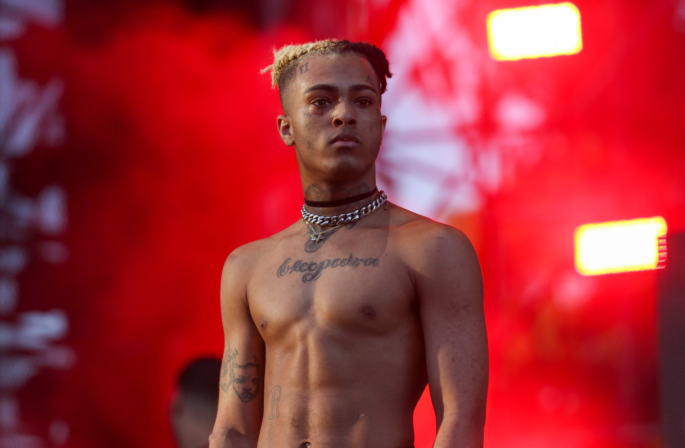
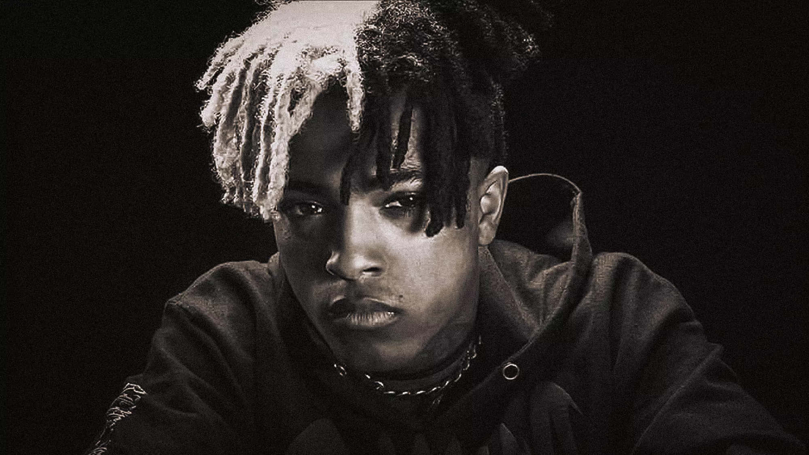
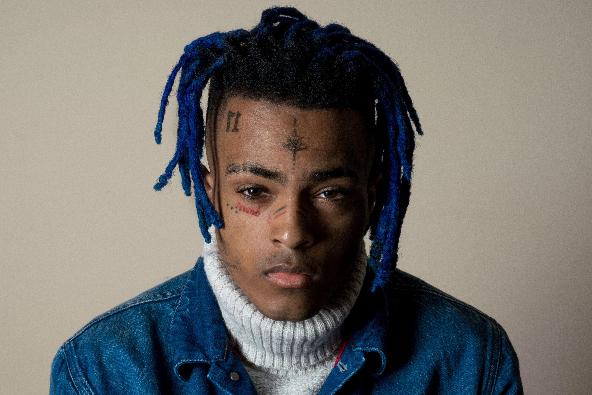

XXXTentacion, whose real name was Jahseh Dwayne Ricardo Onfroy, was an American rapper, singer, and songwriter. He was born on January 23, 1998, in Plantation, Florida. He became popular through SoundCloud, where he shared emotional and experimental music. His songs often explored themes such as depression, loneliness, relationships, and personal struggles. His unique style combined hip-hop, rock, R&B, and other musical influences. Some of his most well-known songs include “SAD!”, “Moonlight,” “Changes,” and “Jocelyn Flores.” His debut album, *17*, was released in 2017 and received significant attention from listeners around the world. In 2018, he released his second album, *?*, which reached number one on the Billboard 200 chart. XXXTentacion was also known for his emotional connection with his fans and his willingness to discuss personal problems through music. He died on June 18, 2018, at the age of 20. Despite his short career, his music continues to influence many listeners today.